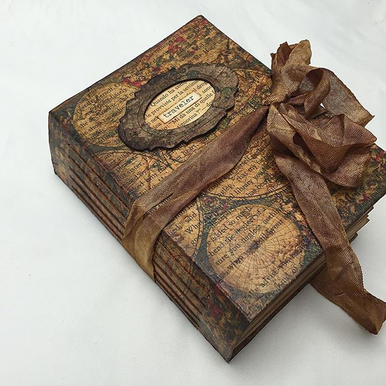
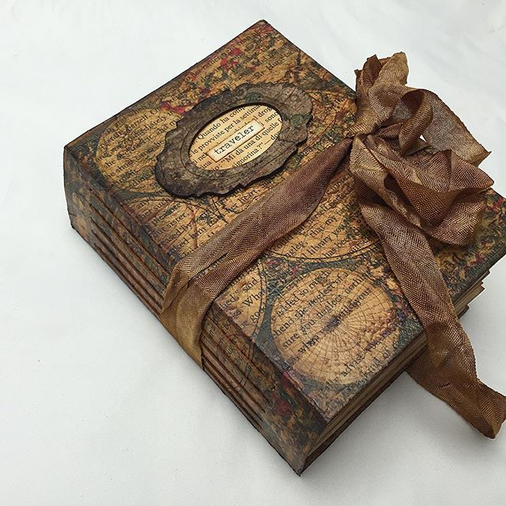

Overview
- 1 feature of the product
- 2 feature of the product
- 3 feature of the product
- 4 feature of the product
- 5 feature of the product
buy online
Price: NZ $80

Hi, I'm Michelle
this is a small description about Michelle
Price: NZ $80
this is a small description about Michelle
The curiosities vintage style Journal is made from an assortment of different weights of tea dye plain papers. It includes pockets and tags for capturing a special occasion or memory. A lovely place to keep your treasured memories, photos, notes and stories, or anything else you can think of! It features hand sewing for the binding. and comes wrapped in hand dyed seam binding.


 
